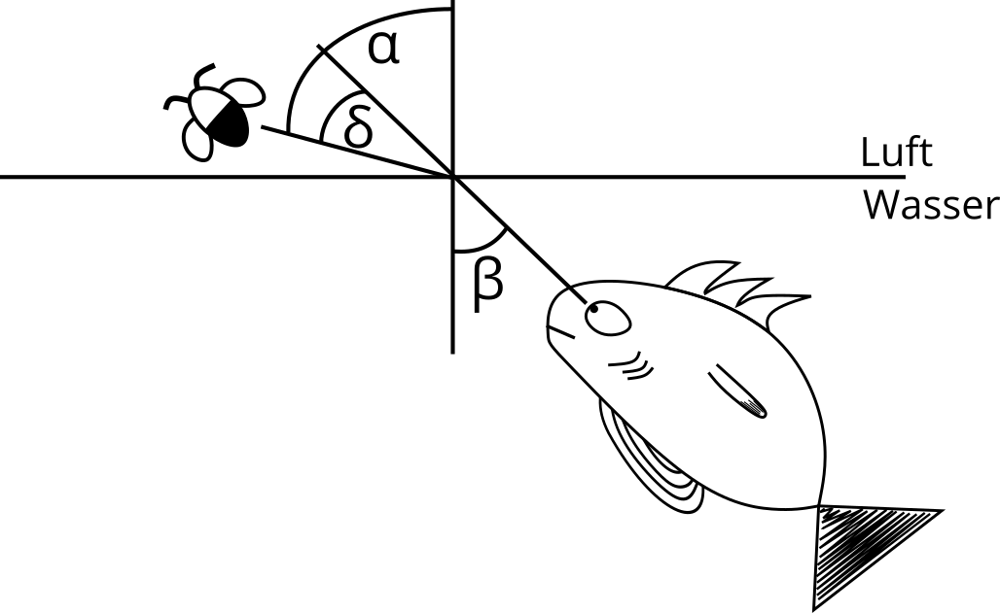
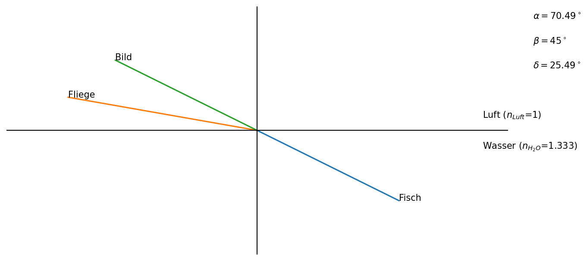

Schützenfisch Aufgabe¶
Gegeben:
\(n_{H_2O}\) = 1,333 (bei \(\vartheta\) = 20°C und \(\lambda\) = 589nm)
\(n_{Luft}\) = 1
Mit dem Brechunggesetz
\( n_{Luft} \cdot \sin(\alpha) = n_{H_2O} \cdot \sin(\beta) \)
und \(\alpha=\delta+\beta\) ergibt sich
\( n_{Luft} \cdot \sin(\delta+\beta) = n_{H_2O} \cdot \sin(\beta) \).
Diese Formel lässt sich über die Näherung für kleine Winkel \(\sin(\alpha)=\alpha\) zu
\(\delta\approx\frac{\beta}{3}\)
umstellen.

#Import der benötigten Bibliotheken
import math
import matplotlib.pyplot as plt
import numpy as np
def calulate_alpha(beta):
sina, alpha = 0,0
sina = math.sin(math.radians(beta)) * 1.333 #n_H20=1.333
if sina < 1:
alpha = math.degrees(math.asin(sina))
else:
sina = 1
alpha = math.degrees(math.asin(sina))
return alpha
def plot_fisch_aufgabe(beta):
#Abfangen zu großer Winkel
if beta > 90 or beta < -90:
print(r'Ich glaube der Fisch liegt auf dem Trockenen. Damit der Fisch nicht aus dem Wasser hüpft halte beta unter 90 ° bzw. über -90°')
#Abfangen von Winkeln, die größer als der Totalreflexionswinkel für den Übergang Wasser->Luft sind (ca. 48 °)
elif (beta > 48 and beta < 90) or (beta<-48 and beta>-90):
print(r'Der eingegebene Winkel liegt über dem Grenzwinkel für Totalreflexion für den Übergang von Wasser zu Luft von ca. 48 °'
' d.h. der Fisch sieht unter diesem Winkel die Grenzfläche Wasser-Luft als wäre sie ein Spiegel')
else:
alpha = calulate_alpha(beta) #Funktion aufrufen, die den Ablenkwinkel alpha berechnet
x, y, length = 0, 0, 8
beta1 = beta + 270
endbetay = length * math.sin(math.radians(beta1))
endbetax = length * math.cos(math.radians(beta1))
beta2 = beta1 - 180
endbeta2y = length * math.sin(math.radians(beta2))
endbeta2x = length * math.cos(math.radians(beta2))
alpha1 = alpha + 90
endalphay = y + length * math.sin(math.radians(alpha1))
endalphax = length * math.cos(math.radians(alpha1))
# plot the points
fig = plt.figure(num=None, figsize=(10, 5), dpi=150, facecolor='w', edgecolor='k')
ax = plt.subplot(111)
ax.set_ylim([-10, 10]) # set the bounds to be 10, 10
ax.set_xlim([-10, 10])
ax.plot([x, endbetax], [y, endbetay])
ax.text(endbetax, endbetay, 'Fisch')
ax.plot([x, endalphax], [y, endalphay])
ax.text(endalphax, endalphay, 'Fliege')
ax.plot([x, endbeta2x], [y, endbeta2y])
ax.text(endbeta2x, endbeta2y, 'Bild')
ax.axhline(y=0, xmin= -6, xmax= 15, color='black', linewidth=1)
ax.axvline(x=0, ymin= -6, ymax= 6, color='black', linewidth=1)
ax.text(9,1, r'Luft ($n_{Luft}$=1)')
ax.text(9,-1.5, r'Wasser $(n_{H_2O}$=1.333)')
ax.text(11,9,r'$\alpha = $' + str(round(alpha,2)) + '$^\circ$')
ax.text(11,7,r'$\beta = $' + str(round(beta,2))+ '$^\circ$')
ax.text(11,5,r'$\delta = $' + str(round(alpha - beta,2))+ '$^\circ$')
plt.axis('off')
plot_fisch_aufgabe(beta = 45) #Blickwinkel des Fisches definieren
#Die getroffene Näherung für kleine Winkel gilt bis ca. 15°, darüber wird die Abweichung zu groß!
#vgl. beta und delta oben rechts in der Darstellung
